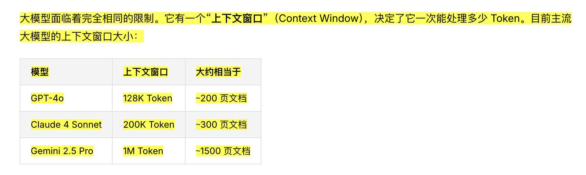
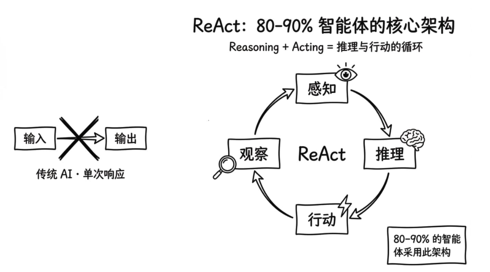
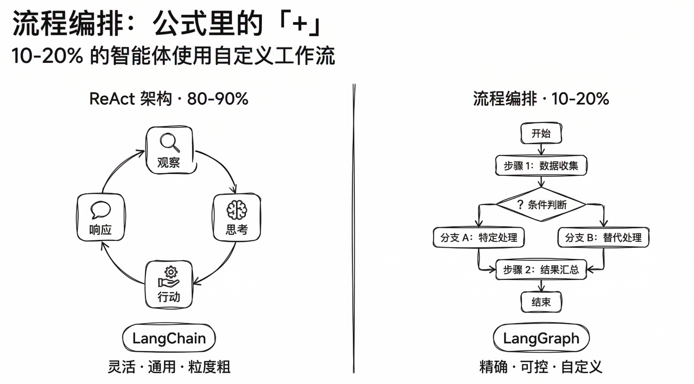
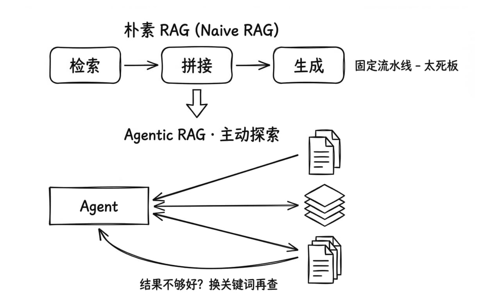
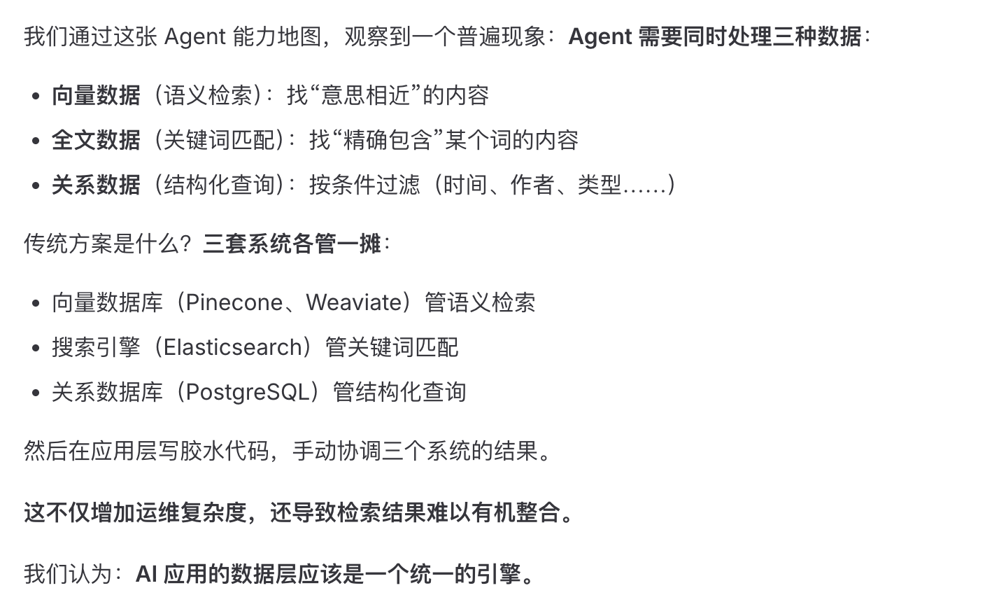
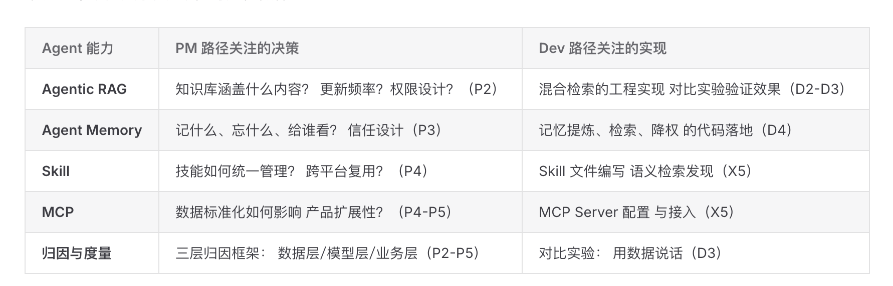

DATAWHALE · TASK 1
环境准备与课前导读
完成工具链自检，并第一次把 Agent、RAG、MCP 等分散概念放进同一张基础地图。
- 日期
- 时间
- 未记录
- 难度
- ●●○○○ · 入门
本次任务
- 01完成 Shell、Python、模型 API、Git 环境自检，并提交结果。
- 02完成课前导读与公共基础。
TAKEAWAY
这次不是学会所有概念，而是先知道它们分别站在哪里。
真正有价值的进展，是开始能区分 LangChain 与 LangGraph、朴素 RAG 与 Agentic RAG，以及 MCP、function call 与 CLI 各自解决的问题。
学习过程中随笔
常听说“超长上下文”，但直到这次才对上下文窗口相当于多少页文档有了具体感觉。

过去接触过很多 Agent 架构，反而目不暇接。先识别主流框架，让知识更容易被吸收。

LangChain 和 LangGraph 的区别以前总说不直白，这张图第一次把关系讲清楚了。

朴素 RAG 与 Agentic RAG 的差异已经看见，但 Agentic RAG 的实现方式仍是后续重点。

05
MCP、function call 和 CLI 仍然容易混淆，需要用真实例子反复区分，而不是只记定义。
能看懂一段描述，不代表知道如何实现。把“看懂但不会做”明确记为后续学习重点。

作为产品经理，我很好奇开发人员在同一套工具链中的执行方式和观察视角。
